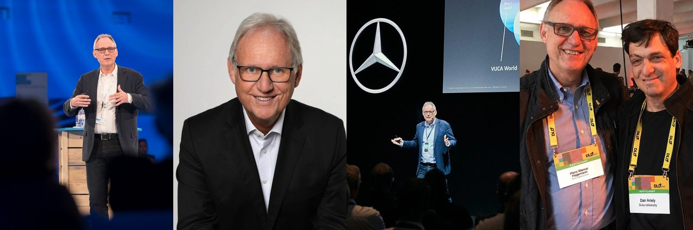

<!doctype html>
<html lang="de">
<head>
  <meta charset="utf-8" />
  <meta name="viewport" content="width=device-width, initial-scale=1, viewport-fit=cover" />
  <meta name="theme-color" content="#000" />
  <meta name="description" content="Dr. Hans W. Hagemann — part of the Munich Leadership Group team of leadership development and coaching experts." />
  <link rel="canonical" href="https://www.munichleadership.com/de/team-hagemann.html" />
  <link rel="alternate" hreflang="en" href="https://www.munichleadership.com/de/team-hagemann.html" />
  <link rel="alternate" hreflang="de" href="https://www.munichleadership.com/de/team-hagemann.html" />
  <link rel="alternate" hreflang="x-default" href="https://www.munichleadership.com/de/team-hagemann.html" />
  <meta property="og:locale" content="de_DE" />
  <meta property="og:type" content="website" />
  <meta property="og:site_name" content="Munich Leadership Group" />
  <meta property="og:title" content="Dr. Hans W. Hagemann — Munich Leadership Group" />
  <meta property="og:description" content="Dr. Hans W. Hagemann — part of the Munich Leadership Group team of leadership development and coaching experts." />
  <meta property="og:url" content="https://www.munichleadership.com/de/team-hagemann.html" />
  <meta property="og:image" content="https://www.munichleadership.com/assets/og-image.png" />
  <meta property="og:image:width" content="1200" />
  <meta property="og:image:height" content="630" />
  <meta name="twitter:card" content="summary_large_image" />
  <meta name="twitter:title" content="Dr. Hans W. Hagemann — Munich Leadership Group" />
  <meta name="twitter:description" content="Dr. Hans W. Hagemann — part of the Munich Leadership Group team of leadership development and coaching experts." />
  <meta name="twitter:image" content="https://www.munichleadership.com/assets/og-image.png" />
  <!-- Cache-bust: tell browsers to revalidate this HTML on every
       visit so content edits (quote text, body copy) show up
       immediately instead of waiting for a 10-minute CDN cache. -->
  <meta http-equiv="Cache-Control" content="no-cache, must-revalidate" />
  <meta http-equiv="Pragma" content="no-cache" />
  <title>Dr. Hans W. Hagemann — Munich Leadership Group</title>
  <link rel="icon" href="../assets/mark.svg" type="image/svg+xml" />
  <link rel="stylesheet" href="../styles.min.css?v=607" />
  <style>
    body { overflow: visible; }
    .standalone { overflow: visible; min-height: 100dvh; }
    .profile-hero { position: relative; height: 58vh; min-height: 360px; overflow: hidden; margin-top: calc(env(safe-area-inset-top, 0px) + clamp(66px, 6vw + 24px, 86px)); }
    .profile-hero__media { position: absolute; inset: 0; }
    .profile-hero__media img { width: 100%; height: 100%; object-fit: cover; object-position: center 30%; }
    /* PDF: pull the focal point higher so his head isn't clipped by
       the slim 150px print banner (the screen banner is much taller
       at 58vh so center 30% works fine there). */
    @media print { .profile-hero__media img { object-position: center 12% !important; } }
    .profile-hero__scrim { position: absolute; inset: 0; background: linear-gradient(to top, #000 0%, rgba(14,15,16,0.08) 15%, rgba(14,15,16,0) 100%); }
    .profile-hero__copy { position: absolute; inset: 0; display: flex; flex-direction: column; justify-content: flex-end; padding: clamp(24px,5vw,72px) clamp(24px,5vw,72px) clamp(32px,6vh,64px); }
    .profile-hero__name { font-size: clamp(30px,4.5vw,58px); font-weight: 600; letter-spacing: -0.02em; color: #fff; margin: 0 0 10px; line-height: 1.1; }
    .profile-hero__role { font-size: 13px; font-weight: 500; letter-spacing: 0.12em; text-transform: uppercase; color: rgba(255,255,255,0.50); margin: 0; }
    .profile-content { background: #000; padding: clamp(48px,7vh,96px) clamp(24px,5vw,72px) 0; }
    .profile-body { max-width: 820px; margin: 0 auto clamp(48px,7vh,80px); }
    .profile-body p { font-size: 15px; line-height: 1.75; color: rgba(255,255,255,0.65); margin: 0 0 18px; }
    .profile-body p strong { color: rgba(255,255,255,0.88); }
    /* Pull-quote paragraph — same visual language as .fol-pull on
       future-of-leadership.html: bigger, brighter, with a thin red
       bar on the left.
       !important needed: a sitewide rule in styles.min.css?v=607 line 5518
       (`.profile-body p { font-size: 17px !important; line-height:
       1.75 }`) was beating this inline block. Matching specificity
       isn't enough when an !important is in play. */
    .profile-body p.profile-pull {
      font-size: clamp(20px, 2.4vw, 28px) !important;
      line-height: 1.4 !important;
      color: #fff !important;
      font-weight: 500 !important;
      border-left: 3px solid var(--mlg-red);
      padding-left: 22px;
      margin: 32px 0;
    }
    .profile-body p.profile-pull strong { color: #fff; font-weight: 700; }
    .profile-section-label { font-size: 12px; font-weight: 500; letter-spacing: 0.18em; text-transform: uppercase; color: var(--mlg-red); margin: 32px 0 14px; }
    .profile-tags { display: flex; flex-wrap: wrap; gap: 8px; margin: 0 0 8px; }
    .profile-tag { font-size: 12px; font-weight: 500; letter-spacing: 0.05em; color: rgba(255,255,255,0.60); border: 1px solid rgba(255,255,255,0.12); border-radius: 999px; padding: 5px 14px; }
    .profile-quote { max-width: 820px; margin: 0 auto clamp(40px,6vh,72px); padding: 32px 40px; background: rgba(181,0,52,0.10); border: 1px solid rgba(181,0,52,0.28); border-radius: 8px; }
    .profile-quote__label { font-size: 13px; font-weight: 500; letter-spacing: 0.18em; text-transform: uppercase; color: var(--mlg-red); margin: 0 0 14px; text-align: center; }
    .profile-quote__text { font-size: clamp(15px,1.8vw,18px); line-height: 1.7; color: rgba(255,255,255,0.80); margin: 0; font-style: italic; text-align: center; }
    .profile-cta { text-align: center; padding: clamp(32px,5vh,56px) 0; border-top: 1px solid rgba(255,255,255,0.08); max-width: 1200px; margin: 0 auto; }
    .profile-cta p { color: rgba(255,255,255,0.55); font-size: 14px; margin: 0 0 20px; }
    .profile-cta__btn { display: inline-flex; align-items: center; gap: 8px; background: var(--mlg-red); color: #fff; font-family: var(--font-sans); font-size: 13px; font-weight: 500; letter-spacing: 0.06em; text-transform: uppercase; text-decoration: none; padding: 13px 28px; border-radius: 999px; transition: opacity 200ms; border: none; cursor: pointer; }
    .profile-cta__btn:hover { opacity: 0.85; }
    @media (max-width: 640px) { .profile-quote { padding: 24px; } }
  </style>
  <script type="application/ld+json">
  [{"@context":"https://schema.org","@type":"BreadcrumbList","itemListElement":[{"@type":"ListItem","position":1,"name":"Home","item":"https://www.munichleadership.com/"},{"@type":"ListItem","position":2,"name":"Team","item":"https://www.munichleadership.com/#slide=8"},{"@type":"ListItem","position":3,"name":"Dr. Hans W. Hagemann","item":"https://www.munichleadership.com/de/team-hagemann.html"}]},{"@context":"https://schema.org","@type":"Person","name":"Dr. Hans W. Hagemann","image":"https://www.munichleadership.com/assets/team/hagemann-banner.jpg","url":"https://www.munichleadership.com/de/team-hagemann.html","worksFor":{"@type":"Organization","name":"Munich Leadership Group","url":"https://www.munichleadership.com/"}}]
  </script>
</head>
<body>
  <main class="standalone">
    <div class="topbar">
      <a class="topbar__logo" href="index.html#slide=0" aria-label="Munich Leadership Group — back to home">
        
      </a>
    </div>
    <span class="corner-mark" aria-hidden="true">
      <svg class="mark__path mark__path--1" viewBox="236 0 67 65"><path d="M302.059,64.913L293.891,8.134L236.69,0.066L302.059,0.066L302.059,64.913Z" fill="currentColor"/></svg>
      <svg class="mark__path mark__path--2" viewBox="236 0 67 65"><path d="M287.625,64.906L281.26,20.665L236.69,14.375L287.625,14.375L287.625,64.906Z" fill="currentColor"/></svg>
      <svg class="mark__path mark__path--3" viewBox="236 0 67 65"><path d="M274.971,64.942L270.186,31.681L236.685,26.958L274.971,26.958L274.971,64.942Z" fill="#b50034"/></svg>
    </span>

    <div class="profile-hero">
      <div class="profile-hero__media" style="background-image:url('../assets/team/hagemann-banner.jpg');background-size:cover;background-position:center;background-repeat:no-repeat;">
        
      </div>
      <div class="profile-hero__scrim"></div>
      <div class="profile-hero__copy">
        <a class="page-back" href="index.html#slide=8">
          <svg viewBox="0 0 24 24" width="14" height="14" fill="none" stroke="currentColor" stroke-width="1.5" stroke-linecap="round" stroke-linejoin="round" aria-hidden="true"><path d="M19 12H5M12 19l-7-7 7-7"/></svg>
          <span data-de="zurück zum Team">zurück zum Team</span>
        </a>
        <p class="profile-hero__eyebrow" data-de="Gründer &amp; Managing Partner">Gründer & Managing Partner</p>
        <h1 class="profile-hero__name">Dr. Hans W.<br>Hagemann</h1>
        <p class="profile-hero__role">Munich Leadership Group</p>
      </div>
    </div>

    <div class="profile-content">
      <nav class="breadcrumb" aria-label="Breadcrumb">
        <a href="index.html#slide=8">Team</a>
        <span class="breadcrumb__sep" aria-hidden="true">/</span>
        <span class="breadcrumb__current">Dr. Hans W. Hagemann</span>
      </nav>


      <div class="profile-body">
        
        <p class="profile-section-label" data-de="Persönliches Profil">Persönliches Profil</p>

        <p data-de="Dr. Hagemann ist Top-Executive-Coach, Keynote-Speaker, Autor und kreativer Vordenker in den Bereichen Leadership, Talentmanagement und Innovation. Er verfügt über umfangreiche Expertise in der weltweiten Arbeit mit Top- und Senior-Management-Teams zur Förderung von Bestleistung und Innovation.">Dr. Hagemann ist Top-Executive-Coach, Keynote-Speaker, Autor und kreativer Vordenker in den Bereichen Leadership, Talentmanagement und Innovation. Er verfügt über umfangreiche Expertise in der weltweiten Arbeit mit Top- und Senior-Management-Teams zur Förderung von Bestleistung und Innovation.</p>

        <p data-de="<strong>Seine Arbeit basiert auf fundiertem Wissen über neurowissenschaftliche Forschung sowie einem umfassenden Repertoire an psychologischen und Management-Kompetenzen.</strong> Er ist <strong>Co-Autor des preisgekrönten Buches „The Leading Brain“</strong> (Penguin Random House, New York 2017), das auf neurowissenschaftlicher Basis erläutert, wie Höchstleistung für Einzelne, Teams und Organisationen erzielt werden kann. Das Buch wurde 2017 zu einem der drei besten Wirtschaftsbücher der USA gewählt, wurde zum weltweiten Bestseller und ist mittlerweile in sieben Sprachen übersetzt worden."><strong>Seine Arbeit basiert auf fundiertem Wissen über neurowissenschaftliche Forschung sowie einem umfassenden Repertoire an psychologischen und Management-Kompetenzen.</strong> Er ist <strong>Co-Autor des preisgekrönten Buches „The Leading Brain“</strong> (Penguin Random House, New York 2017), das auf neurowissenschaftlicher Basis erläutert, wie Höchstleistung für Einzelne, Teams und Organisationen erzielt werden kann. Das Buch wurde 2017 zu einem der drei besten Wirtschaftsbücher der USA gewählt, wurde zum weltweiten Bestseller und ist mittlerweile in sieben Sprachen übersetzt worden.</p>

        <p data-de="Dr. Hagemann ist ein analytischer und ganzheitlicher Denker mit umfangreicher Erfahrung in der Individual- und Organisationspsychologie. Sein praxisnaher Ansatz und seine Erfahrung machen ihn in Verbindung mit hohen Qualitätsstandards und echter Leidenschaft für seine Arbeit zu einem geschätzten und vertrauensvollen Berater für viele Führungskräfte, die seinen kreativen professionellen Ansatz erlebt haben.">Dr. Hagemann ist ein analytischer und ganzheitlicher Denker mit umfangreicher Erfahrung in der Individual- und Organisationspsychologie. Sein praxisnaher Ansatz und seine Erfahrung machen ihn in Verbindung mit hohen Qualitätsstandards und echter Leidenschaft für seine Arbeit zu einem geschätzten und vertrauensvollen Berater für viele Führungskräfte, die seinen kreativen professionellen Ansatz erlebt haben.</p>

        <p class="profile-pull" data-de="Seiner Arbeit liegt eine persönliche Überzeugung zugrunde: Neugier ist der Motor von Leistung. Ob er Einzelne, Teams oder ganze Organisationen coacht oder durch Transformationen begleitet — er bringt einen evidenzbasierten Ansatz ein, der ebenso überzeugend wie wirksam ist.">Seiner Arbeit liegt eine persönliche Überzeugung zugrunde: Neugier ist der Motor von Leistung. Ob er Einzelne, Teams oder ganze Organisationen coacht oder durch Transformationen begleitet — er bringt einen evidenzbasierten Ansatz ein, der ebenso überzeugend wie wirksam ist.</p>

        <p data-de="Dr. Hagemann verfügt über einen MSc und einen PhD in Organisationspsychologie der Ludwig-Maximilians-Universität München; sein Doktorvater war Prof. Lutz von Rosenstiel. Während seines Studiums wurde er von der Konrad-Adenauer-Stiftung gefördert. Seit 2010 unterstützt er die Stiftung als Auswahlprüfer für neue Stipendiatinnen und Stipendiaten in der Studien- und Graduiertenförderung.">Dr. Hagemann verfügt über einen MSc und einen PhD in Organisationspsychologie der Ludwig-Maximilians-Universität München; sein Doktorvater war Prof. Lutz von Rosenstiel. Während seines Studiums wurde er von der Konrad-Adenauer-Stiftung gefördert. Seit 2010 unterstützt er die Stiftung als Auswahlprüfer für neue Stipendiatinnen und Stipendiaten in der Studien- und Graduiertenförderung.</p>

        <p data-de="Vor der Gründung der Munich Leadership Group im Jahr 2008 war er in Unternehmensberatungen sowie im Marketing bei Procter &amp; Gamble und der Werbeagentur Lintas tätig. 2011 gründete Dr. Hagemann die Munich Leadership Group USA LLC mit Sitz in Palo Alto, Kalifornien, um die Aktivitäten der MLG auf dem US-Markt voranzutreiben. 2009 und 2012 lebte er mit seiner Familie im Großraum Los Angeles.">Vor der Gründung der Munich Leadership Group im Jahr 2008 war er in Unternehmensberatungen sowie im Marketing bei Procter & Gamble und der Werbeagentur Lintas tätig. 2011 gründete Dr. Hagemann die Munich Leadership Group USA LLC mit Sitz in Palo Alto, Kalifornien, um die Aktivitäten der MLG auf dem US-Markt voranzutreiben. 2009 und 2012 lebte er mit seiner Familie im Großraum Los Angeles.</p>

        <p class="profile-section-label" data-de="Kompetenzfelder">Kompetenzfelder</p>
        <div class="profile-tags">
          <span class="profile-tag">Cultural Transformation</span>
          <span class="profile-tag">Leadership Development</span>
          <span class="profile-tag" data-de="Audits &amp; Assessments">Audits & Assessments</span>
          <span class="profile-tag" data-de="Teamentwicklung auf Top-Level">Teamentwicklung auf Top-Level</span>
          <span class="profile-tag" data-de="Neurowissenschaft &amp; Performance">Neurowissenschaft & Performance</span>
          <span class="profile-tag" data-de="High-Performance-Coaching">High-Performance-Coaching</span>
          <span class="profile-tag">Executive Sparring</span>
          <span class="profile-tag" data-de="Keynotes zu Leadership und Transformation">Keynotes zu Leadership und Transformation</span>
          <span class="profile-tag" data-de="Verhaltensänderung">Verhaltensänderung</span>
          <span class="profile-tag" data-de="Verantwortungsvolle KI">Verantwortungsvolle KI</span>
        </div>
      </div>

      <div class="profile-quote">
        <p class="profile-quote__label" data-de="So werden Sie zum Helden">So werden Sie zum Helden</p>
        <p class="profile-quote__text" data-de="„Seien Sie in jeder Situation ein Vorbild. Denken Sie daran: Sie stehen immer auf der Bühne!“">„Seien Sie in jeder Situation ein Vorbild. Denken Sie daran: Sie stehen immer auf der Bühne!“</p>
      </div>

      <div class="profile-cta">
        <a class="profile-cta__btn" href="index.html#slide=10">
          <span data-de="Kontaktieren Sie uns">Kontaktieren Sie uns</span>
          <svg viewBox="0 0 24 24" width="14" height="14" fill="none" stroke="currentColor" stroke-width="2" stroke-linecap="round" stroke-linejoin="round" aria-hidden="true"><path d="M5 12h14M13 5l7 7-7 7"/></svg>
        </a>
        <div style="margin-top: 14px;">
          <button class="profile-cta__btn" type="button" onclick="window.print()">
            <span data-de="PDF erstellen">PDF erstellen</span>
            <svg viewBox="0 0 24 24" width="14" height="14" fill="none" stroke="currentColor" stroke-width="2" stroke-linecap="round" stroke-linejoin="round" aria-hidden="true"><path d="M6 9V2h12v7M6 18H4a2 2 0 01-2-2v-5a2 2 0 012-2h16a2 2 0 012 2v5a2 2 0 01-2 2h-2M6 14h12v8H6z"/></svg>
          </button>
        </div>
        <div style="margin-top: 20px;">
          <a class="page-back" href="index.html#slide=8">
            <svg viewBox="0 0 24 24" width="14" height="14" fill="none" stroke="currentColor" stroke-width="1.5" stroke-linecap="round" stroke-linejoin="round" aria-hidden="true"><path d="M19 12H5M12 19l-7-7 7-7"/></svg>
            <span data-de="zurück zum Team">zurück zum Team</span>
          </a>
        </div>
      

      <footer class="imprint" style="margin-top: 2px;">
        <p class="imprint__links">
          <a href="disclaimer.html">Disclaimer</a>
          <span aria-hidden="true">&middot;</span>
          <a href="privacy-policy.html" data-de="Datenschutz">Datenschutz</a>
          <span aria-hidden="true">&middot;</span>
          <a href="terms-of-service.html" data-de="Nutzungsbedingungen">Nutzungsbedingungen</a>
          <span aria-hidden="true">&middot;</span>
          <span class="imprint__copy">&copy; 2026 Munich Leadership Group</span>
        </p>
      </footer>

    </div>

    <!-- PDF-only footer (hidden on screen, centered at the bottom of the printed page) -->
    <footer class="pdf-footer" aria-hidden="true">
      <p class="pdf-footer__brand">Munich Leadership Group</p>
      <p class="pdf-footer__contact">info@munichleadership.com &middot; +49 89 413 1910</p>
    </footer>
  </main>

  <script>
    document.querySelectorAll('.page-back').forEach((a) => {
      a.addEventListener('click', (e) => {
        const href = a.getAttribute('href');
        if (!href) return;
        e.preventDefault();
        document.querySelector('.standalone').classList.add('is-leaving');
        setTimeout(() => { location.href = href; }, 320);
      });
    });
  </script>
  <script src="../subnav.min.js?v=243"></script>
</body>
</html>
